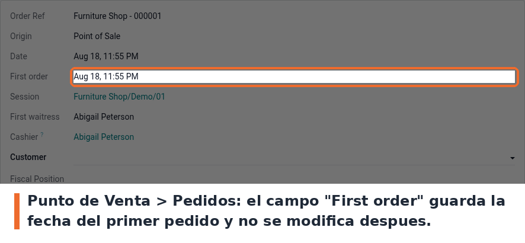

Guarda la fecha del primer pedido del Punto de Venta y no la modifica despues. Agrega el campo First order al pedido del Punto de Venta: el valor se fija cuando el pedido se crea y no se vuelve a tocar, aunque despues cambie la fecha del pedido.
Sirve para saber cuando entro originalmente una venta, con independencia de correcciones posteriores. No requiere ninguna configuracion: con instalar el modulo alcanza, el campo aparece solo y se llena solo.
Entra a Punto de Venta › Pedidos y abri cualquier pedido. El campo First order esta justo debajo de Date.

Campo First order en el formulario del pedido de Punto de Venta
pre_init_hook que migra los identificadores externos del nombre viejo del
modulo (firstTimeOrder) al actual. Es idempotente.@api.constrains en vez de
@api.depends. Se midio en Odoo 19 que funciona: el campo se llena al crear el pedido y al
escribir el disparador (date_order), que es el comportamiento que hay hoy en produccion. Aun
asi no es la forma canonica de declarar un campo calculado almacenado. Cambiar el decorador
recalcularia los datos historicos, asi que queda como decision pendiente del usuario.static/description/icon.png. En la ficha de Apps se ve el cubo generico de Odoo. Hace
falta arte, no se inventa.